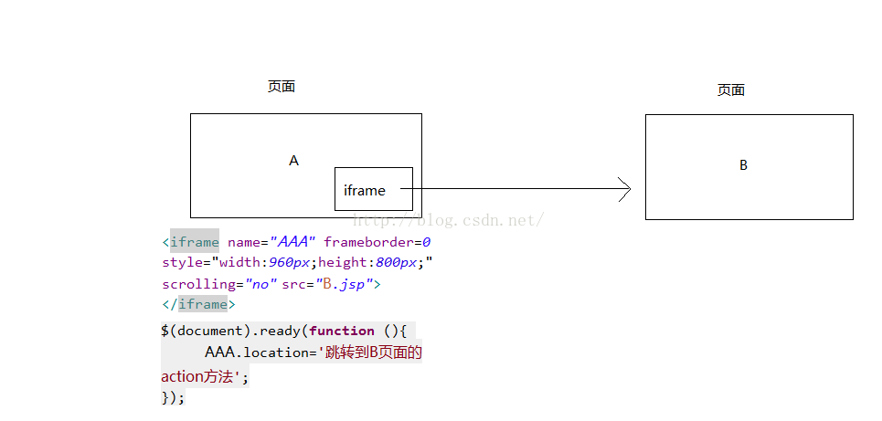

iframe 元素会创建包含另外一个文档的内联框架（即行内框架）。
在 HTML 4.1 Strict DTD 和 XHTML 1.0 Strict DTD 中，不支持 iframe 元素。
一些老的浏览器不支持 iframe。 如果得不到支持，iframe 是不可见的。
readonly 属性规定输入字段为只读。

scrolling属性：如果设置scrolling="yes"，则该框架始终带滚动条；如果设置scrolling="no"，则该框架没有滚动条，如果框架内的文档超出了框架范围，将被裁切；如果设置scrolling="auto"，则该框架的滚动条取决于包含的文档尺寸，当文档没有超出框架范围，就不显示滚动条，当文档超出框架范围，就显示滚动条。